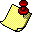

This document briefly describes Graphic User Interface of the Annotator GUI.
Annotator GUI is desined to be used in two modes: pool mode and direct mode. In the pool mode application connects to the Workflow Management System, fetches the first available task if there are any and loads corresponding document from the datastore. In direct mode application connects directly to the document service and loads a document with a given ID.
The main window contains two parts: toolbar and document editor. Some toolbar buttons is different for different modes of the Annotator GUI.
Click button to connect to the Workflow Management System. This button is only available in the pool mode.
After successfull connection to the Workflow Management System, Annotator GUI will check whether you have any annotation tasks.
If you don't have any tasks Annotator GUI will display an appropriate message.
In case that you have a task, a matching document will be loaded and displayed in the document editor.
Click button  to inform Workflow Management System about finishing your current task. This button is only available in the pool mode.
Click button to inform Workflow Management System about cancelling your current task. This button is only available in the pool mode.
Click button to save your current document. This button is available in both pool and direct modes.
Click button to view application messages. This button is available in both modes.
Click button to display this help window. This button is available in both modes.
Click button to edit the settings of the annotator GUI, for example the look and feel and fonts used. This button is available in both modes.
This is a GATE Document Editor. Please read the documentation supplied with a GATE distribution to get idea how to use it.
Closing dialog windows should be performed either by pressing Cancel button or ESC.
If you want to exit application simply close main window.
At the window title you can see status of application:
[Connected to: http://executiveCallbackURL]
If you are not connected to the service, you will see status:
[Not connected]